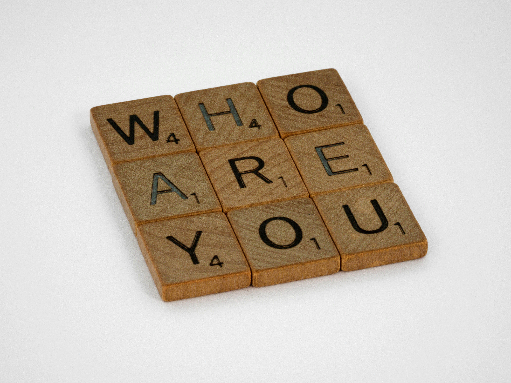

As we approach another high-stakes U.S. election in 2024, I have been in interested in understanding what drives political participation, and particularly, what drives nonvoting. My investigation stems from my own experience growing up in a family where politics was rarely discussed. I can appreciate that for some, the notion of politics can feel so removed from the individual lived experiences of those who are simply trying to survive in a world that is increasingly hard to survive in. In this way, political participation can feel more like a privilege because it assumes other privileges that aren't equally afforded. At the root of these privileges include exposure to political conversations and access to knowledge surrounding the electoral system. This is also dependent on the larger social environment one resides in, which can either encourage or discourage dissemination of this knowledge and general conversation flows. (4) Moreover, in communities that do not facilitate a politically inclined culture, what realistic meaning does voting have?
Likewise, when nonvoters are characterized as being younger, of lower socioeconomic status, and not belonging to a political party, (6) this perhaps speaks more to the structural and institutional barriers to political knowledge. Some of these barriers include unequal access to information, as well as access to the time and resources needed to distinguish between reliable versus unreliable sources of information.(5) Moreover, political knowledge is often defined, created, and gatekept by the most dominant and privileged groups of society. (5)
Finally, if nonvoting is stigmatized, perhaps this increases the risk of voter misreporting. (1) In this case, proportions of (self-reported) voters to nonvoters remain questionable. Additional research suggests that awareness of minority underrepresentation in politics has shown to decrease political participation among some minority groups. (2) This provokes another question of how implicit awareness of individual underrepresented status is related to internalized racial oppression (3) where in which nonvoters from underrepresented groups are sensitive to voter suppression tactics, and thus, reinforce the hegemonic structure by not voting. As such, in considering why many American's don't vote, this analysis extends on the authors' original findings by considering social and cultural constraints on individual-level behavior that are related to the diverse social, economic, and ethnoracial experiences of American nonvoters.
Furthermore, while it has been acknowledged that “Americans don't fall neatly into any one category” (6) of either voter versus nonvoter, social demographics and political disillusion were only examined across voter category—rarely or never vote, sometimes vote, and/or almost always vote. (6) Hence, I thought it was important to examine leading reasons behind nonvoting and perceptions for how to boost voter turnout across gender, race, socioeconomic status (measured by highest level of education and income category), and party identification, given the instability and embedded power structures of voter category alone.
Figure 1 highlights leading reasons that motivate nonvoting among nonvoters and inconsistent voters by education. Proportions can be further examined by race, party identification, and income category. The first chart shows proportions of individuals who reported candidate disapproval and the second chart shows proportions of individuals who reported political disillusion. Overall, candidate disapproval and political disillusion were highest among women with no political party preference, an income of less than $40,000, and a high school education or less.
Among Democrat women earning less than $40,000, equal proportions of Black women with a high school education or less and White women with some college education were most disapproving of political candidates (12.12%). In terms of political disillusion for the same income group, political disillusion was more than 9% higher among White women in comparison to Black women with a high school education or less (24.24% versus 15.15%, respectively). Black women with a college education and Hispanic women with a high school education or less earning an income between $75,000-$125,000 comprised of the highest proportions (21.43%) of individuals who reported candidate disapproval for this demographic and income group. While demographic counts for these groups shown in Figure 1 are not large by any means (and perhaps speaks to the underrepresentation of marginalized groups overall), the interrelationships between reasons behind nonvoting trends, political party identification, ethnoracial identity, and socioeconomic status are interesting nonetheless.
Among male Democrats earning between $40,000-$75,000, 15.79% of Black men with a high school education or less (equal to the proportion of White women of the same SES) and above 10% of Hispanic men with at least a high school education or some college education were most disillusioned. Hispanic men earning between $75,000-$125,000 and with some college education comprised of almost 17% who reported the highest level of political disillusion (equal to White women with a high school education or less and Black women with a college education in the same income group). Black male Democrats with a high school education or less earning $125,000 or more comprised of 28.57% who reported candidate disapproval.
Tip 1: Click on either 'Female' or 'Male' to examine trends by the available gender identities for these data.
Tip 2: Click on any ethnoracial identity by clicking on any category of interest to examine trends by Race/Ethnicity.
Tip 3: Use the 'Party Identification' filter to examine trends by political party identification.
Tip 4: Use the 'Income Cat' filter to examine trends by income category.
* Note: (1) Respondents were coded as either 'female' or 'male' and (2) all ethnoracial categories except for 'Hispanic' are non-Hispanic.
These findings suggest that even with when White women are of a lower socioeconomic status (SES) (i.e. having less education and or a lower income), they know enough about the political system to express political dissatisfaction related to candidates running for office and feeling like “no matter who wins nothing will change for people like me.” (6) However, higher proportions of minority groups who report dissatisfaction on these same measures are not really seen until these data are examined across higher levels of income and education. Perhaps it can be further inferred that among minority groups, an increase in socioeconomic status via higher income and education can also provide the time, resources, and the environments that are needed to foster knowledge about politics and the electoral system. In other words, one can afford to politically participate.
Figures 2-3 show there was the most support for:
Across all political affiliations and income levels, White men and women comprise of the highest proportions who support more unbiased candidate information to boost voter turnout. In particular, proportions are highest among college-educated White Democrat women and White Independent men. A similar trend is almost consistently seen among Democrat men and women at all income levels. However, among Republican White men and women, proportions are only higher among those with a college education when income reaches $75,000-$125,000 and higher. Below this income bracket, more support for unbiased candidate information is higher among White Republicans with a high school education or less.
When income is less than $40,000, Democratic White women with a high school education or less comprise of the largest proportion who support more unbiased candidate information, and this is followed by above 10% of Democrat Black women and Black men from the same income and education group.
A similar trend is seen among Black and White women earning between $40,000-$75,000, and these proportions are higher among women with higher levels of education. For men in this same income group, the most support for more unbiased information is seen among college-educated White men (8.84%), Hispanic men (4.42%), and Black men (4.02%). At higher income levels, more support is also seen among Black and Hispanic men and woman with higher education.
* Note: (1) Respondents were coded as either 'female' or 'male' and (2) all ethnoracial categories except for 'Hispanic' are non-Hispanic.
In terms of support for making Election Day a national holiday, White Democrat women and White Independent men with a college education support this idea much higher overall. Among Democrats earning less than $40,000 alone, more support is seen among Black women and men with a high school education or less, and this is next to White women with a high school education or less (10.28%). Among women earning between $40,000-$75,000, the most support is seen among Black and White women with a college education. These trends are fairly consistent with each increasing income bracket.
With higher education, Democrat Hispanic men and Black women earning an income between $40,000-$75,000 and higher also support making Election Day a national holiday in higher proportions. A similar trend is seen among higher income levels, but proportions among underrepresented groups are not as high.

Support for automatic registration, automatic mail ballots, and early voting are also highest among college-educated White women and men. This trend is seen whether individuals identify as Democrat, Republican, Independent, or another party. Among Democrat supporters earning less than $40,000, more support is seen among Black and Hispanic women and men, but support is generally higher among White women. Additionally, more support is almost consistently seen among Democrat Black and Hispanic women and men with higher income and education.

* Note: (1) Respondents were coded as either 'female' or 'male' and (2) all ethnoracial categories except for 'Hispanic' are non-Hispanic.
This analysis provides an intersectional perspective on why many Americans don't vote. Although further analyses are needed for a more complete understanding of how the social, economic, and ethnoracial experiences shape voting and nonvoting behavior, this analysis adds to the nonvoting conversation by pointing to the embedded power structures within each voter category, and thus, the voting histories of individuals.
Among inconsistent and nonvoters, higher dissatisfaction among low SES White women (and men) with no political party preference is an interesting finding when higher dissatisfaction among underrepresented groups is only really see at higher SES levels. Additionally, White women and men generally show the highest support for each of the ideas examined to boost voter turnout. When examining these data at higher income and education levels, higher proportions of support are seen among underrepresented groups.
While it is not entirely clear why these trends are seen, it introduces the idea that perhaps political participation, and thus, having the knowledge, time, and resources needed to be able to vote, are more easily afforded to underrepresented and marginalized groups when their social and economic circumstances make this more feasible (i.e. having a higher income and/or higher level of education). For Whites, and particularly White women, perhaps political participation and voting are more easily afforded, and less dependent on socioeconomic status. Overall, more data is needed to make more sense of these trends, including further examination about what the political affiliation no preference contextually means to White nonvoters.

The data used for this project are publicly available to download in CSV form on the Five Thirty Eight website. Even so, much of my own exploration of the data and some cleaning was done with Pandas, and then saved into a new CSV file to use in Tableau.
To see my implementation files, please visit:
https://github.com/earias89/SI649_Final-Project
To access the original implementation files from the original article, Why Many American's Don't Vote, please visit:
https://github.com/fivethirtyeight/data/tree/master/non-voters
Sample Size: 5,239
Data Collection: Probability-based polling using Ipsos's KnoweldgePanel from September 15th - September 25th
* More information pertaining to the sampling of these data can be found in the README.md file in the original data repository link above.
1. Anderson, B. A., & Silver, B. D. (1986). Measurement and mismeasurement of the validity of the self-reported vote. American Journal of Political Science, 771-785.
2. Boudreau, C., Merolla, J. L., & Shah, S. (2020). Messaging matters: how information about underrepresentation affects the political participation of racial and ethnic groups in California. California Journal of Politics and Policy, 12(1).
3. David, E. R., Schroeder, T. M., & Fernandez, J. (2019). Internalized racism: A systematic review of the psychological literature on racism's most insidious consequence. Journal of Social Issues, 75(4), 1057-1086.
4. Grönlund, K., & Milner, H. (2006). The determinants of political knowledge in comparative perspective. Scandinavian political studies, 29(4), 386-406.
5. Kuo, R., & Marwick, A. (2021). Critical disinformation studies: History, power, and politics. Harvard Kennedy School Misinformation Review, 2(4), 1-11.
6. Thomson-DeVeaux, A., Mithani, J., Bronner, L. (2020, Oct 26). Why many americans don’t vote. FiveThirtyEight.com. https://projects.fivethirtyeight.com/non-voters-poll-2020-election/
Photo 1: Alina Grubnyak, Unsplash.com. https://unsplash.com/photos/low-angle-photography-of-metal-structure-ZiQkhI7417A
Photo 2: Obi - @pixel8propix, Unsplash.com. https://unsplash.com/photos/zSl8Di_N_9UPhoto 3: Brett Jordan, Unsplash.com. https://unsplash.com/photos/D44kHt8Ex14
Photo 4: Element5 Digital, Unsplash.com. https://unsplash.com/photos/ls8Kc0P9hAA
Photo 5: NASA, Unsplash.com. https://unsplash.com/photos/1lfI7wkGWZ4